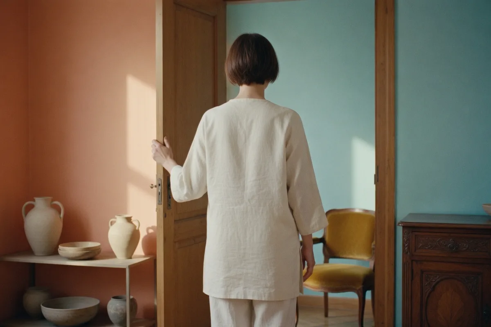
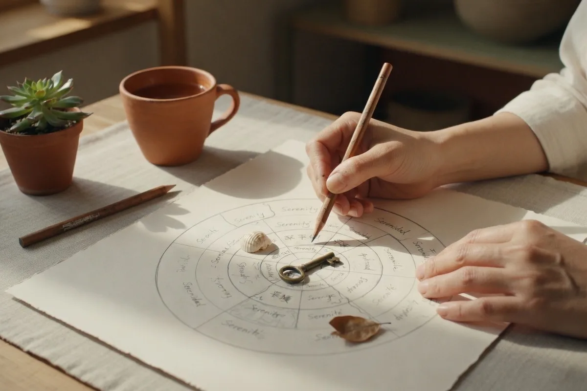
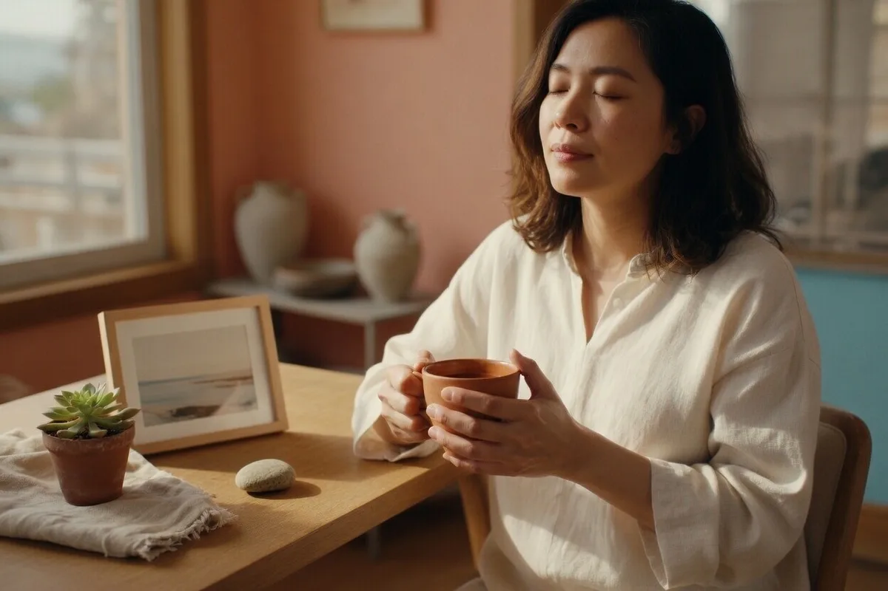

Почему мы чувствуем себя чужими и там, и здесь. Что такое третья культура и как пройти через кризис принадлежности, сохранив себя.
ВведениеЧувство, которое сложно объяснить
Вы приезжаете на родину в отпуск — и чувствуете себя наблюдателем со стороны. Друзья обсуждают местные новости, а вы не знаете половины имён. Вы возвращаетесь «домой» в страну, где теперь живёте — и понимаете, что здесь тоже остались чужаком. Акцент, странные привычки, ностальгия по вещам, которых здесь нет.
Этот текст — для тех, кто живёт в промежуточном пространстве. Не совсем там, не совсем здесь. Для тех, кто устал объяснять, «откуда ты», потому что ни один ответ не кажется правильным.
Корни ведь не в земле кончаются, а начинаются — в человеке. И когда ты уезжаешь, ты не рвёшь их. Ты просто вырастаешь в новую почву, а корни продолжают жить внутри.

Что происходитПочему мы теряем ощущение «своих»
Принадлежность — это не абстракция. Это базовая человеческая потребность, такая же фундаментальная, как потребность в безопасности или связи. Когда она нарушается, мы испытываем тревогу, одиночество, бессмысленность.
Но что такое принадлежность на практике? Это не только паспорт или место рождения. Это ощущение, что:
Территориальное
Здесь твоя земля, твой пейзаж, твоя архитектура. Ты знаешь запах улиц, звуки двора.
Социальное
Здесь твои люди. Те, кто знал тебя до, кто помнит истории из твоего детства.
Культурное
Ты понимаешь шутки без объяснений, знаешь контекст, разделяешь ценности.
Языковое
Ты думаешь, шутишь, ругаешься на языке, который чувствуешь кожей.
Идентичностное
Ты знаешь, кто ты. Твоя история имеет связность и смысл.
Эмиграция затрагивает все эти уровни одновременно. И потому так болит — мы теряем не что-то одно, а целую систему опор, на которых строилось наше «я».
Четыре стадииПуть через кризис
Кризис принадлежности не проходит мгновенно. Это процесс, который часто идёт по спирали — с возвратами, застреваниями и прорывами.
Идеализация прошлого
«Там было лучше». Ностальгия, романтизация того, что осталось позади. Отрицание сложностей переезда.
Культурный шок
«Здесь всё не так». Раздражение, отторжение, ощущение чуждости. Попытки сохранить старые паттерны.
Адаптация
«Могу функционировать». Выучил язык, освоил быт. Но внутри всё ещё чувство «игры в чужую роль».
Интеграция
«Я из обоих мест». Осознание третьей культуры — синтез старого и нового. Целостность через принятие разрыва.
Важно понимать: эти стадии не линейны. Можно месяцами жить в адаптации, а потом вдруг рухнуть в ностальгию. Или думать, что достиг интеграции, а потом осознать, что это было лишь перемирие с собой.

Третья культураКогда ты не «тот» и не «этот»
Термин «Third Culture Kids» (дети третьей культуры) придумали в 1950-х для детей дипломатов и миссионеров, росших не в родной культуре родителей и не в культуре страны пребывания, а в чём-то третьем — синтетическом, международном, гибридном.
Сегодня это понятие шире. Третья культура — это пространство между, где живут эмигранты, экспаты, дети смешанных браков, люди с миграционным опытом. Это не компромисс или недостаточная ассимиляция. Это полноценная культурная идентичность со своими особенностями:
-
1Гибкость взглядов. Умение видеть ситуацию с разных сторон, не привязываясь к одной культурной логике.
-
2Навыки кросс-культурной коммуникации. Умение «переключаться» между культурными кодами, чувствовать нюансы.
-
3Отношение к «дому» как к процессу, не месту. Дом — это люди, привычки, ритуалы, а не географическая точка.
-
4Болезненный вопрос «откуда ты». Невозможность дать простой ответ и ощущение, что его ожидают.
-
5Острое чувство потери и одновременно обогащения. Жизнь в нескольких мирах даёт и отнимает одновременно.
-
6Сложности с глубокой привязанностью. Страх потерять то, что дорого, потому что уже терял. Или привычка держать дистанцию.
-
7Способность к реинвенции. Умение пересобирать себя, создавать новые нарративы жизни.

УпражненияКак работать с кризисом принадлежности
Нарративная терапия предлагает подход, который особенно хорошо работает для эмигрантского опыта. Вместо того чтобы искать «истинную» идентичность, мы создаём жизнеспособный нарратив — историю о себе, которая даёт смысл и ресурс.
Карта идентичности
Это упражнение помогает увидеть свою идентичность не как монолит, а как ландшафт с разными территориями.
- Возьмите лист бумаги и нарисуйте круг в центре — это «вы сейчас».
- Вокруг нарисуйте зоны: «Откуда я», «Где я сейчас», «Куда иду», «Что я несу с собой», «Что оставил/оставила», «Что обрёл/обрела».
- Заполните каждую зону словами, образами, символами. Без цензуры.
- Посмотрите на карту. Что удивило? Какие связи между зонами вы видите?
- Дайте название этой карте — одной фразой, которая передаёт ваш опыт.
Важно: это не тест и не диагностика. Это способ увидеть свою сложность и обнаружить ресурсы там, где казалось — только потеря.
Мои якоря
Когда всё меняется, важно сознательно выбирать то, что остаётся постоянным. Эти «якоря» помогают чувствовать стабильность внутри, даже когда снаружи всё нестабильно.
- Составьте список из 5-7 вещей, которые были важны для вас в детстве, юности, до эмиграции.
- Отметьте, какие из них вы сохранили в новой жизни (даже в изменённой форме).
- Составьте список из 5-7 вещей, которые стали важны здесь и сейчас.
- Найдите пересечения. Что осталось? Что изменилось? Что добавилось?
- Напишите себе письмо: «Что я беру с собой в будущее, независимо от того, где буду жить».
Письмо себе из будущего
Это упражнение из будущего помогает выйти из тупика сегодняшнего кризиса и увидеть, как этот опыт обогатит вас.
- Представьте себя через 10 лет. Вы прошли через кризис принадлежности, интегрировали опыт эмиграции.
- Напишите письмо сегодняшнему себе от этого будущего «я».
- В письме: что вы тогда понимаете о сегодняшнем опыте? За что благодарны себе сейчас? Какой совет даёте?
- Читайте это письмо, когда чувствуете, что застряли в «ни там, ни здесь».
⚠️ Когда нужна помощь специалиста
- Чувство отчуждения не проходит дольше 6 месяцев и усиливается
- Постоянная тоска по прошлом, которая мешает строить настоящее
- Отказ от новых связей и опыта «пока не вернусь»
- Депрессия, тревожные расстройства, суицидальные мысли
- Использование алкоголя или других способов «заглушить» чувства
- Конфликты в семье на почве разной скорости адаптации
Не стесняйтесь обращаться за поддержкой. Работа с эмигрантским опытом — специализация многих терапевтов, включая меня. Иногда одна консультация может разблокировать месяцы внутреннего застоя.
Готовы разобраться со своей историей?
Я работаю с эмигрантским опытом, кризисами идентичности и нарративной реконструкцией. Давайте найдём ваш путь через этот кризис — к целостности, а не компромиссу.
Написать в Telegram